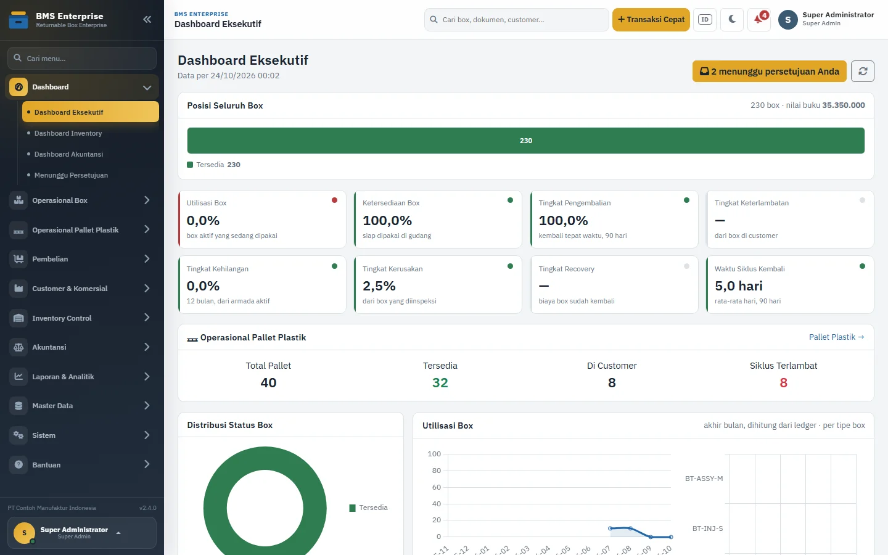
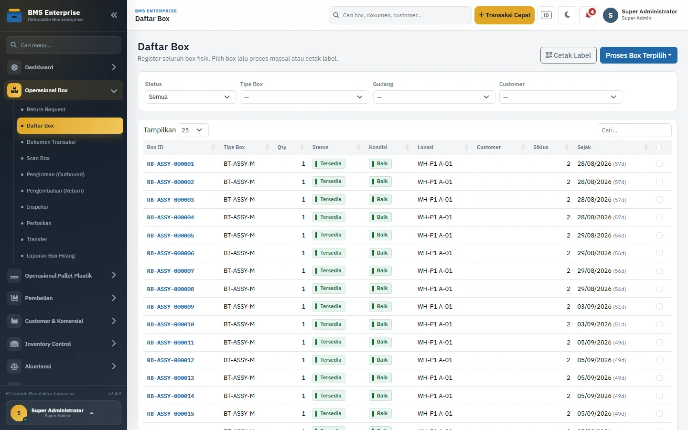
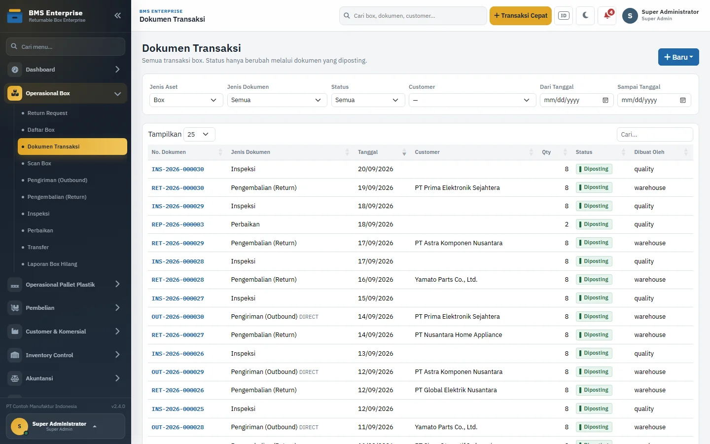
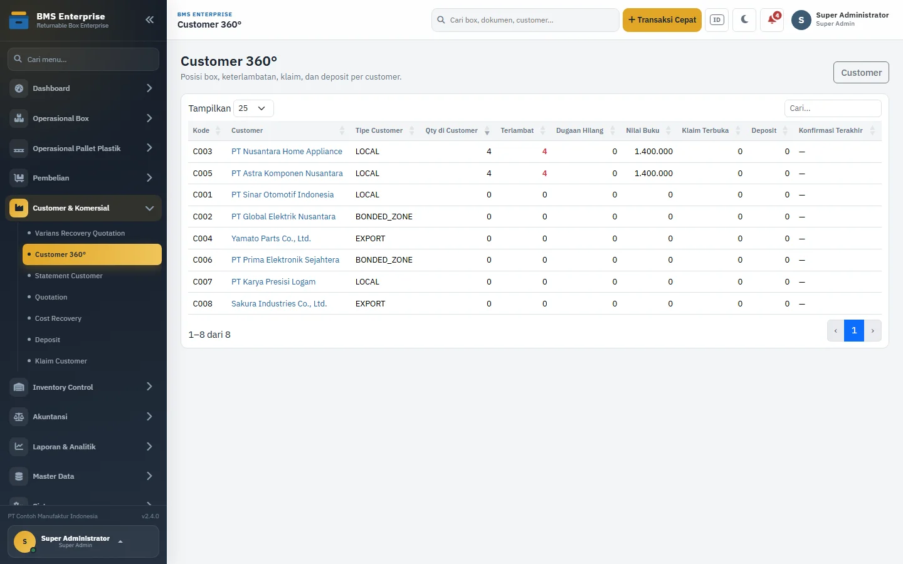
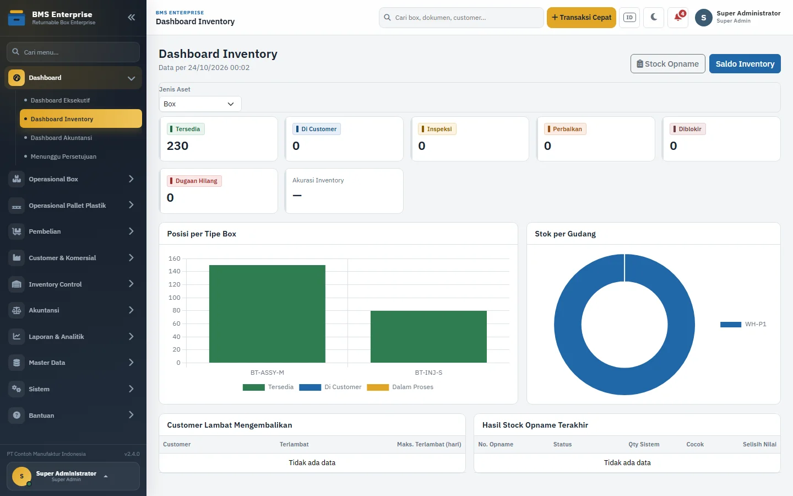
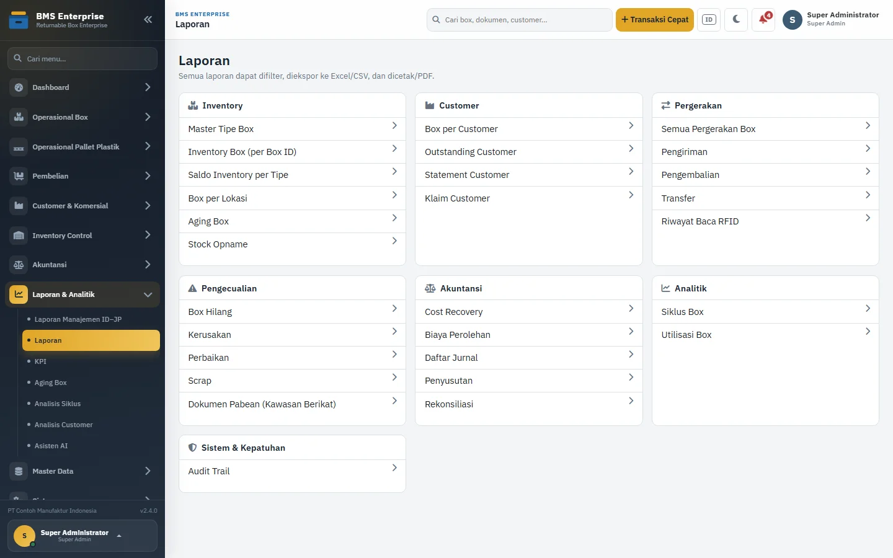

Box tidak kembali
Tidak jelas siapa memegang box, di plant mana, dan sejak kapan.
Solusi unggulan · Returnable Box
BMS mengontrol returnable box dan pallet plastik dari pembelian, pengiriman, pengembalian, inspeksi, perbaikan, sampai rekonsiliasi customer, deposit, dan akuntansi — dalam satu sistem.

Masalah
Waktu tim, akurasi stok, deposit customer, dan temuan audit ikut terdampak.
Tidak jelas siapa memegang box, di plant mana, dan sejak kapan.
Excel tersebar, saldo customer dihitung ulang setiap bulan.
Nilai deposit dan cost recovery sulit dicocokkan dengan fisik.
Stock opname menemukan selisih yang tidak bisa ditelusuri.
Kawasan berikat butuh jejak dokumen dan pergerakan yang lengkap.
Data terpisah per lokasi, laporan konsolidasi terlambat.
Kapabilitas
Bukan sekadar pencatatan — status box hanya berubah lewat dokumen yang diposting.
Registrasi, label, status, lokasi, dan riwayat per box.
Pengiriman, pengembalian, transfer antar plant, return request.
Kondisi box, perbaikan, scrap, dan box hilang.
Statement bulanan, konfirmasi customer, klaim, dan aging.
Deposit sebagai liability, recovery lewat harga, BEP.
Jurnal otomatis, mapping GL, penyusutan, tutup periode.
Scope per plant, maker–checker, audit trail.
Excel/PDF, laporan pabean, paket audit tahunan.
Tampilan
Semua screenshot menggunakan data demo — bukan data client.





Paket
Harga final ditentukan setelah audit scope. Tidak ada biaya tersembunyi.
Rp 3–5 jt
3–5 hari. Laporan temuan + roadmap.
Rp 35–45 jt
1 plant, modul inti, migrasi, training.
Rp 45–60 jt
Multi-plant, portal customer, integrasi akuntansi.
Rp 60–100 jt
Multi-entitas, ERP, laporan custom, SLA.
Proses
Proses, data, gap, dan estimasi final.
Instalasi, konfigurasi plant, customer, kontrak.
Saldo awal, pengujian, dan training tim.
Pendampingan 30 hari + serah terima.
FAQ
Bisa. BMS berbasis PHP 8.1+ dan MySQL 8/MariaDB 10.4+, dapat dijalankan di server on-premise, VPS, atau hosting internal.
Data tetap di server Anda. BMS memakai RBAC, maker–checker, audit trail, dan status box yang hanya berubah lewat dokumen yang diposting.
Rata-rata 4–6 minggu setelah audit dan data awal siap. Modul tambahan atau integrasi ERP dihitung terpisah.
Bisa melalui API/outbox untuk pengiriman dan jurnal. Lingkup integrasi ditentukan setelah audit karena bergantung pada sistem ERP yang dipakai.
Ya. BMS memiliki modul scan dan integrasi RFID. Perangkat keras (tag/reader) tidak termasuk dalam paket implementasi.
Bisa. Demo online memakai data dummy, bukan data client. Jadwalkan audit gratis 30 menit untuk melihat alur yang relevan dengan proses Anda.
Bulan pertama setelah go-live gratis (hypercare). Bulan berikutnya mulai Rp 500 ribu/bulan untuk bugfix, backup, monitoring, dan support fair-use. Pekerjaan di luar lingkup dihitung terpisah.
Mulai
Ceritakan kondisi saat ini. Saya akan bantu petakan apakah BMS cocok, tanpa biaya di tahap awal.